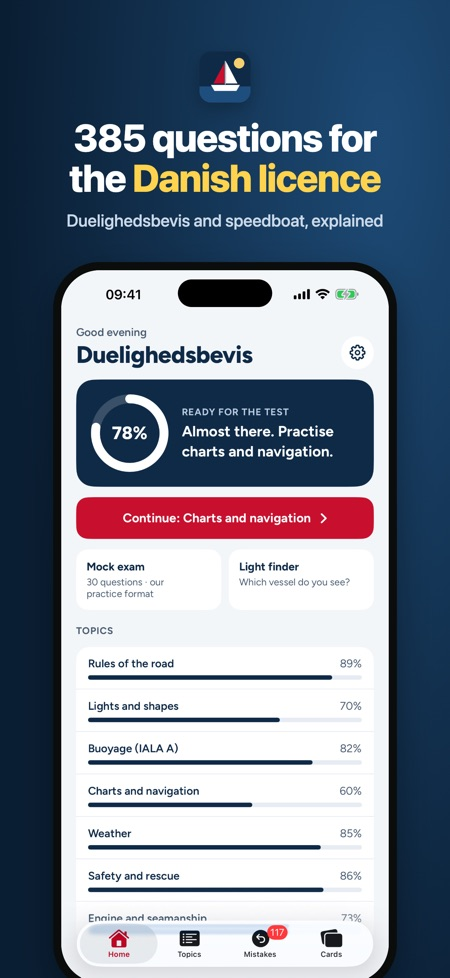
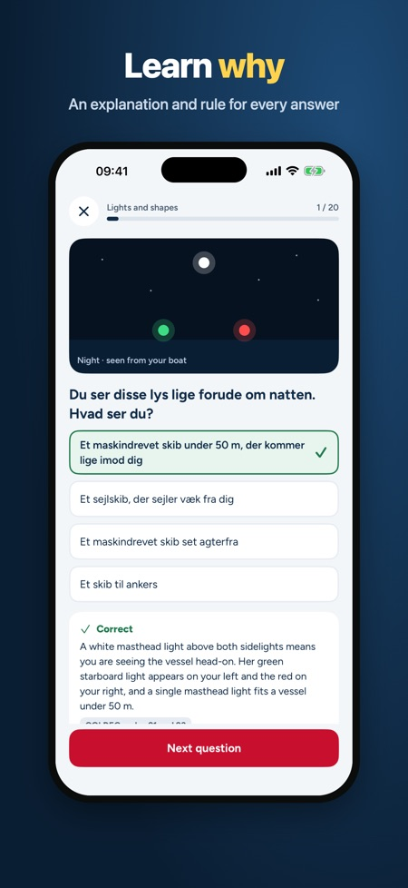
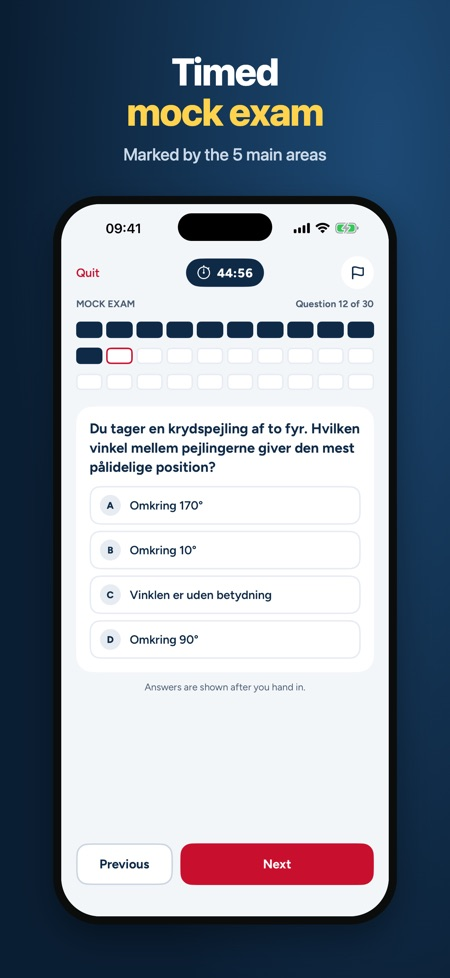

Danish boating theory test. Winter theory course? Practise 385 questions with explanations, take a mock exam marked like the test and name vessels by their lights. For duelighedsbevis and speedboat.



Prepare for the Danish boating theory test (duelighedsbevis i sejlads) and the speedboat licence (speedbådsbevis). 385 practice questions with explanations, timed mock exams and cards for buoyage, navigation lights and sound signals. Pay once, no subscription.
WHAT'S INSIDE
• 385 questions in 8 topics: rules of the road, lights and shapes, buoyage (IALA A), charts and navigation, weather, safety and rescue, engine and seamanship, and speedboats
• An explanation and a rule reference (COLREGs) for every question
• 68 picture questions with navigation lights, day shapes and buoys
• Duelighedsbevis mock exam marked like the test: at most 1 error in each of the 5 main areas and 3 in total
• Speedboat mock exam in two parts like the real test: at most 2 errors in part 1 and 3 in part 2
• Light finder: pick the lights you see and find out which vessel it is and who gives way
• 52 cards: buoyage, light characters, navigation lights, day shapes and sound signals
• My mistakes: questions you get wrong come back until you answer them correctly twice in a row
• Home screen with your readiness and the topic to practise next
• Test date: countdown, a daily goal and reminders 14, 7 and 2 days before the test
HOW IT WORKS
Choose duelighedsbevis or speedboat. Without a purchase you can use one topic (for speedboat, the speedboat topic itself) and take one full mock exam. A one-time purchase unlocks all topics, unlimited mock exams, the cards and the light finder. The app works offline and needs no account.
Questions are in Danish, as in the test. Explanations and menus are available in Danish, English and German.
The duelighedsbevis theory test has no fixed number of questions; the examiner sets the tasks and tests the rules of the road orally. The app's mock exam is a practice format.
This app is independent and not affiliated with the Danish Maritime Authority, the Danish Sailing Association or any authority. All questions are written for practice.